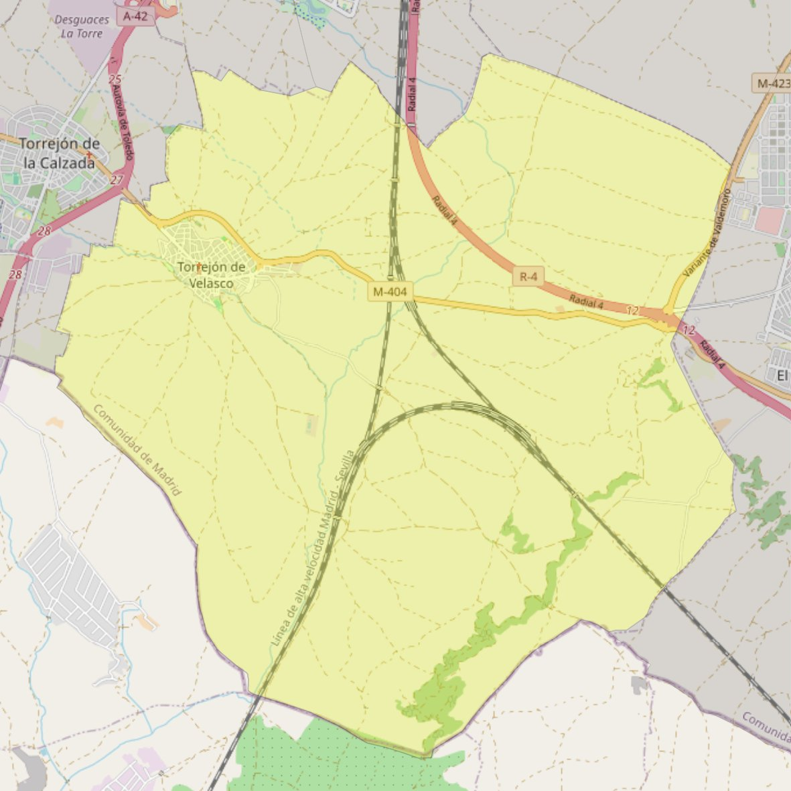

San Esteban Protomártir

- Arciprestazgo
- Parla
- Población
- Torrejón de Velasco
- Dirección postal
- c/ Santísimo, 1
- Código postal
- 28990
- Extensión
- 52,15 km² (5.215 ha)
- Teléfono
- 918 161 388
Arciprestazgos y parroquias de la Diócesis de Getafe
